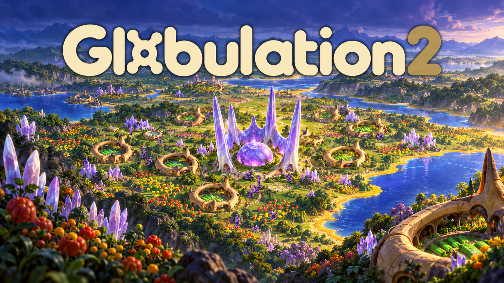

LOCAL REVIEW · EPIC GAMES STORE PAGE DRAFT Copy & image hierarchy · not a live listing
STORE
DiscoverBrowseNews
Search store ⌕
Store › Strategy › Globulation 2
Globulation 2

Build a thriving colony in contested territory.
Food, workers and space shape your expansion. Grow a sprawling colony, balance its competing needs, and contend with rivals for land and resources. Your creatures act autonomously, letting you guide the colony as a whole.
GENRES
Strategy · Real-Time Strategy
FOCUS
Colony building · Resource management
FOOD. WORKERS. GROWTH.
Grow an economy that can sustain your ambitions.
Food, construction and training compete for your workforce. Decide where workers are needed and balance new ambitions with the needs of the colony you already have.
A NEW MAP. A NEW PLAN.
Make the map part of your strategy.
Different maps call for different strategies. Adapt your expansion to the terrain, choose what to defend, and find the routes and resources your colony needs.
GROWTH UNDER PRESSURE
Defend what you've built.
Your economy supports both growth and defense. Balance the needs of your colony while rivals compete for land and resources, and prepare for conflicts that can decide the match.